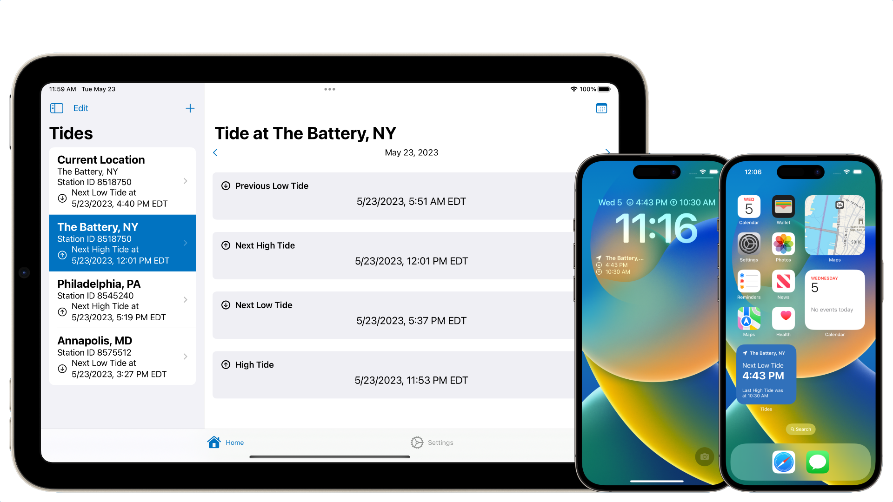
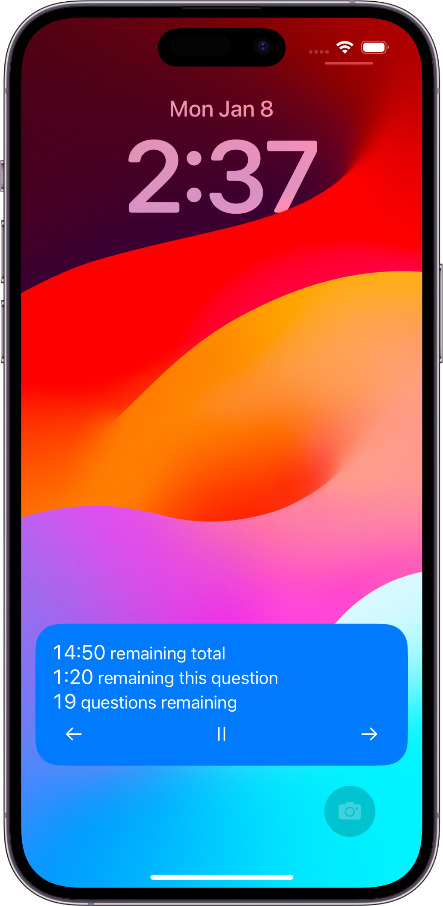
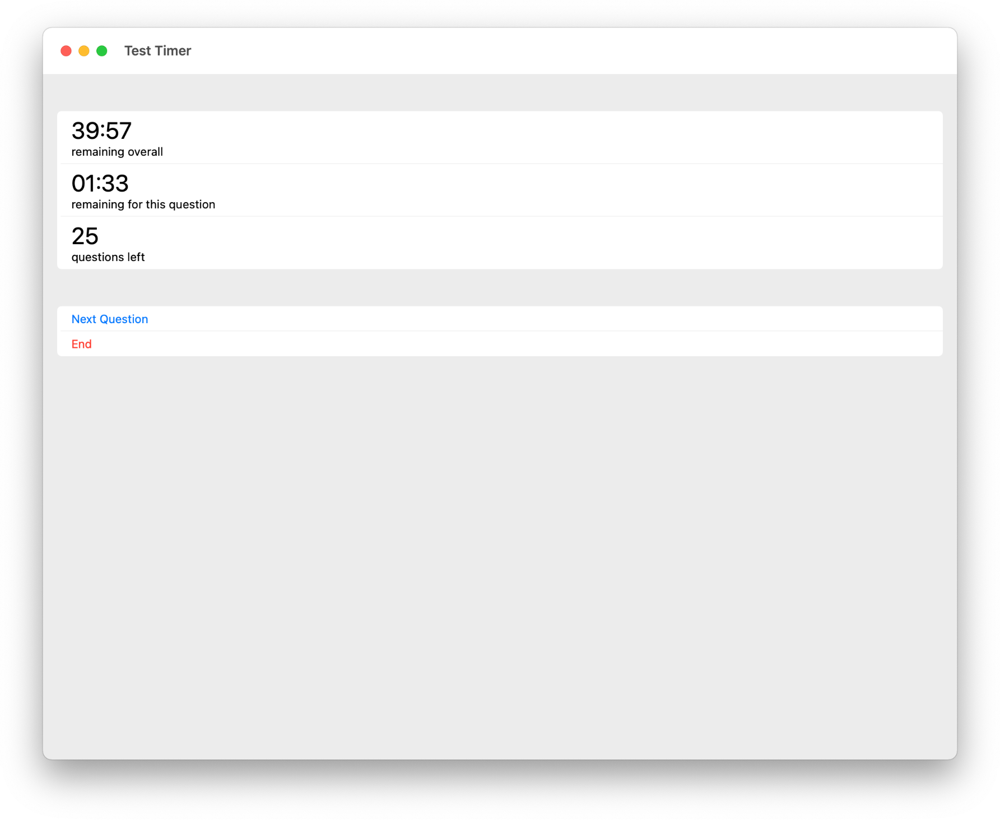
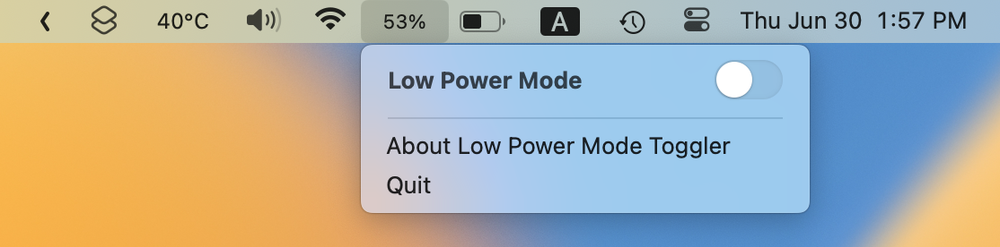
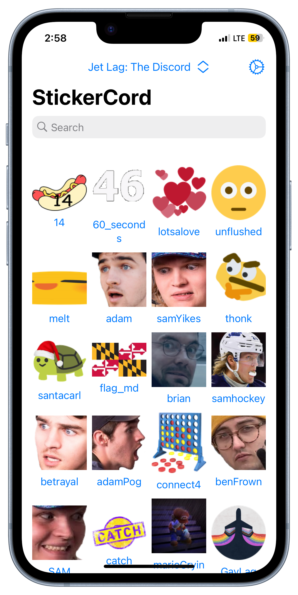
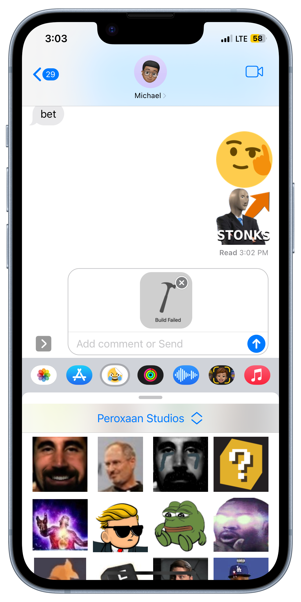
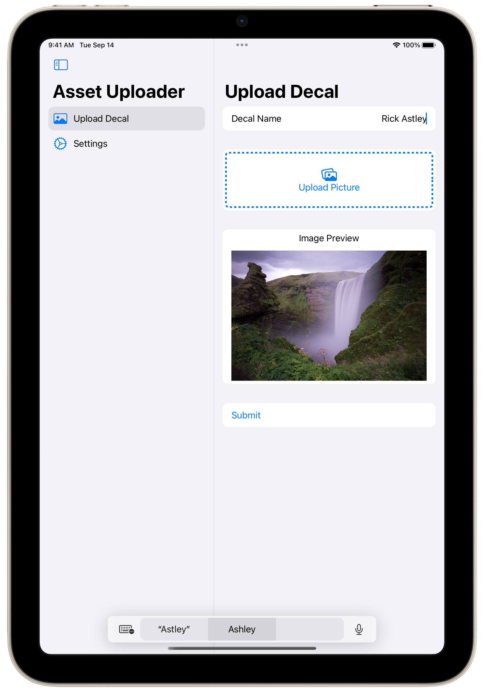
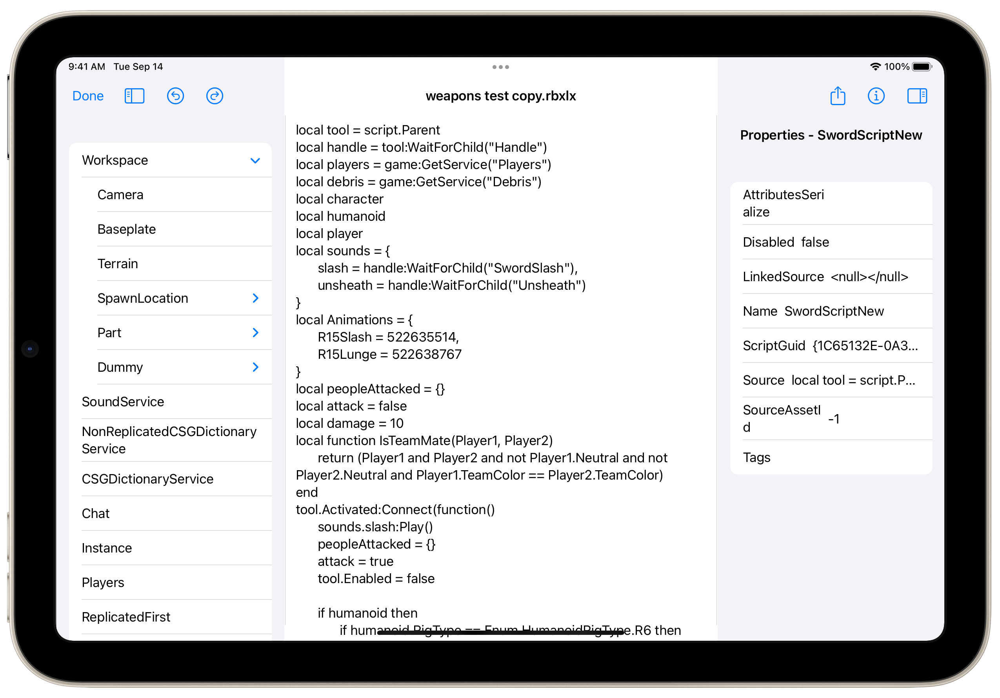
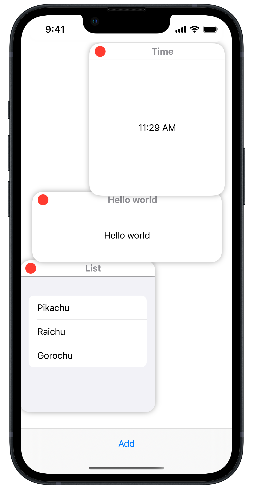

Projects
A list of projects that I have created over the years
Personal Projects
Tides App
An app for iOS, iPadOS, macOS, visionOS, and watchOS devices specifically designed for watercraft users to know tide conditions and when the tides will change. Widgets are also available for users to view this information on their Home Screen or Lock Screen (on iOS and iPadOS) or on their watch face (on watchOS). 
Test Timer
An iOS, iPadOS and Mac Catalyst app designed to help students change their test taking habits for tests where people cannot go back to a question once the question is answered.



Low Power Mode Toggler
A macOS Menu Bar Extra App that allows MacBook owners to toggle Low Power Mode from the menu bar without having to dig through System Preferences for the Low Power Mode toggle. Also supports notifying the user that they can enable Low Power Mode when the MacBook goes down to 20% health (if notifications are enabled). StickerCord
An iOS, iPadOS, and Mac app that allows users to use a Discord server’s stickers and emojis outside the Discord app. On iOS and iPadOS, users can also use the emojis and stickers as iMessage stickers.


Roblox Asset Uploader
An app for iOS and iPadOS devices targeted at allowing users to upload assets such as decals to the Roblox library through a native, robust user interface. Roblox Studio Mobile
A side project to attempt to port features of Roblox Studio onto the iPadOS platform. windows-swiftui
An experimental in creating a windowing system within SwiftUI Open Source Projects I Contributed to
Reminders Menu Bar
- Contributed to implementing a way to set a due date and time to a reminder.
- Fixed a visual display bug that caused low visibility that occured under certain settings.
OpenBVE
Improved the handling of setting the size of the simulator window
The PR was closed but the feature was implemented through a proper NuGet package since macOS doesn't support compilation of NuGet packages.